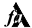

 Software by g/christensen
General Purpose
- ✦ Enso open-source
- ✦ Enso Retreat
- ✦ Silent Night Mod
- ✦ Feedxcavator
- ✦ Ubiquity WebExtension
- ✦ Scrapyard
- ✦ Dark Flow
- ✦ Add Torrent
- ✦ Advanced SlideShow Gadget
- ✦ Sunlight World Map Gadget
Firefox/Chrome Add-Ons
Windows Desktop Gadgets
Development Tools
- ✦ Rho Emacs
- ✦ Lisp Execution Proxy
Loading...
General Purpose
- Enso open-source (Github) 🎬 - a portable fork of Humanized Enso Launcher community edition with additional commands
- Ubiquity WebExtension (Github) 🎬 - Ubiquity Firefox Add-on equivalent for WebExtension APIs
- Scrapyard (Github) 🎬
- Dark Flow (Github) 🎬 - an advanced imageboard aggregator
- Modded Silent Night foobar2000 skin (Github) 🎬 - Silent Night version that uses directory explorer tree instead of the media library filter
- feedxcavator2 (Github) 🎬 - a programmable, GAE-hosted HTML to RSS converter
- Enso Retreat (Sourceforge) 🎬 - a simple work regime management program
- Advanced SlideShow Gadget (Github)
- Sunlight World Map Gadget (Github)
- Add Torrent (Github) - instantly add torrents into the customizable set of directories from Firefox to uTorrent
Development Tools
- Rho Emacs (Sourceforge) - a preconfigured Emacs distribution for Clojure/Racket/Lisp development on Windows
- Lisp Execution Proxy (Sourceforge) - a tool that allows to create Clojure/Lisp source distributions that could be launched with zero configuration on Windows, Linux and MacOS